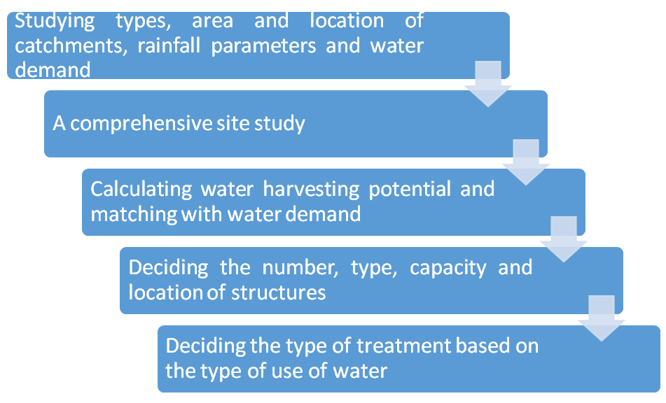

<section id="work-methodology" class="work-methodology">
  <div class="container section-header">
    <h2>Work Methodology</h2>
    <div class="row">
        <div class="col-lg-12 benefits">
          <!--  -->
           
          <div>
            <span>
              Studying types, area and location of catchments, rainfall parameters and water demand
            </span>
            
          </div>
          <div >
            <span>
              A comprehensive site study
            </span>
            
          </div>
          <div>
            <span>
              Calculating water harvesting potential and matching with water demand
            </span>
            
          </div>
          <div>
            <span>
              Deciding the number, type, capacity and location of structures
            </span>
            
          </div>
          <div>
            <span>
              Deciding the type of treatment based on the type of use of water
            </span>
            
          </div>
        </div><!-- Col end -->

        
    </div><!-- Content row end -->

  </div><!-- Container end -->
</section><!-- Main container end -->